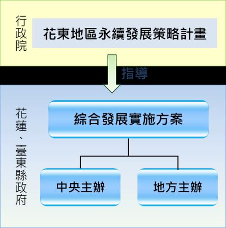
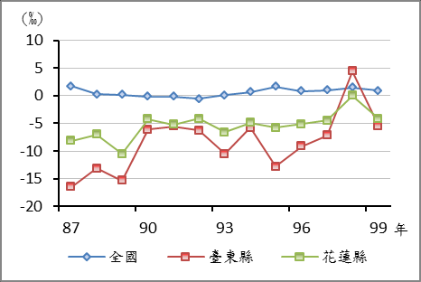
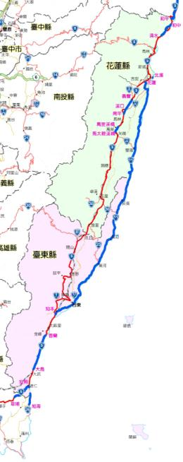
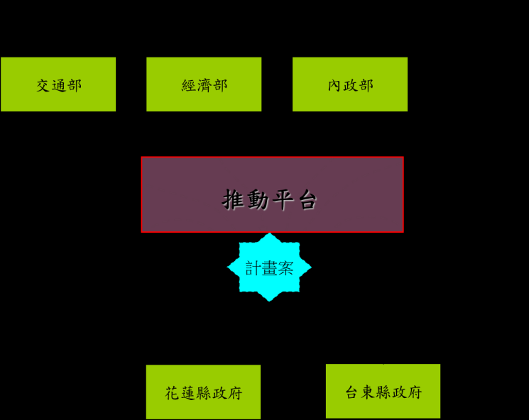
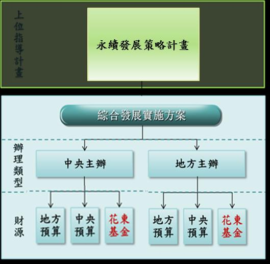
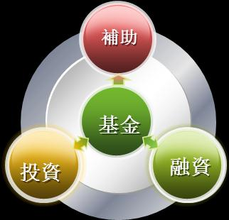

花東地區永續發展策略計畫
（核定本）
中華民國 101 年 9 月
目錄
願景與目標
第一章 前言 ............................................... 1
1.1
計畫緣起...................................................................................................... 1
1.2
計畫範圍與年期.......................................................................................... 1
1.3
規劃理念...................................................................................................... 1
1.4
計畫體系...................................................................................................... 2
第二章 課題與挑戰 .......................................... 3
第三章 願景與目標 .......................................... 8
3.1
發展願景...................................................................................................... 8
3.2
計畫目標...................................................................................................... 8
3.3
關鍵績效指標.............................................................................................. 9
永續發展策略
第四章 經濟面向：優質生活產業帶、工作機會世代享 ........... 11
4.1
擴大觀光與文化之整合加值發展............................................................ 12
4.2
提升有機農業發展能量與規模................................................................ 13
4.3
發展在地新興產業.................................................................................... 14
4.4
增加重點產業與微型產業發展誘因........................................................ 15
4.5
推動傳統產業維新及工業區環境轉型.................................................... 16
4.6
合理管制礦砂開採.................................................................................... 16
第五章 社會面向：知識技藝終身學、樂活健康安全佳 ........... 18
5.1
推動永續生命教育與終身學習................................................................ 19
5.2
加強在地人才培育.................................................................................... 19
5.3
鼓勵青壯年返鄉及人才東移.................................................................... 20
5.4
促進多元族群共榮發展............................................................................ 20
5.5
加強弱勢族群之照護與協助.................................................................... 21
5.6
推動醫療照護體系在地化........................................................................ 21
5.7
提供完善基本公共設施服務.................................................................... 22
第六章 環境面向：多樣生態保育網、共生環境萬年存 ........... 24
6.1
維護生態多樣性保育網............................................................................ 25
6.2
強化災害監測及防治系統........................................................................ 25
6.3
推動建立生態城鄉.................................................................................... 26
6.4
建構綠色人本交通運輸網........................................................................ 26
I
第七章 原住民族面向：原住民族好生活、文化經濟齊發展 ........ 28
7.1
推動原住民族特色產業............................................................................ 29
7.2
落實推動原住民族教育............................................................................ 29
7.3
促進原住民部落發展................................................................................ 30
7.4
加強原住民之照護與協助........................................................................ 30
7.5
增進原住民地區土地管理及合理運用.................................................... 31
區域治理與推動機制
第八章 區域治理：跨域合作共雙贏，花東品牌全球傲 ........... 32
8.1
建構區域合作平台.................................................................................... 32
8.2
建立公民參與之規範與運作機制............................................................ 32
8.3
強化空間整體發展.................................................................................... 32
8.4
引進專業與專責單位開創區域治理成效................................................ 32
8.5
各部門中長程施政計畫應納入區域治理的機制.................................... 33
8.6
共同營造與推廣行銷花東品牌................................................................ 33
第九章 推動機制 ........................................... 34
9.1
推動執行.................................................................................................... 34
9.2
財源規劃.................................................................................................... 38
9.3
動態規劃與滾動檢討................................................................................ 41
II
第一章
前言
1.1 計畫緣起
為推動花東地區產業發展，維護自然生態景觀，發展多元文化
特色，提升生活環境品質及增進居民福祉，促使花東地區永續發展，
立法院於 100 年 6 月 13 日三讀通過「花東地區發展條例」
，並經 總
統於同年 6 月 29 日頒布施行。
「花東地區發展條例」規定，中央主管機關(行政院)應依據花
東地區城鄉發展、自然景觀、生態及文化特色，訂定「花東地區永
續發展策略計畫」
，發揮花東地區優勢條件，爰擬訂本計畫，作為花
蓮及臺東縣政府擬訂「綜合發展實施方案」之依據，據以落實推動。
1.2 計畫範圍與年期
本計畫範圍含括花蓮縣及臺東縣之行政轄區，計畫年期自民國
101 年至 110 年，計 10 年。
1.3 規劃理念
本計畫以「永續發展」為規劃方向，並延續「國土空間發展策
略計畫」中將花東地區定位為「優質生活產業軸」之原則，重要規
劃理念如下：
整合世代公平的規劃
為維護及確保資源的永續，各項策略之研擬與計畫、措施之推動，
均必須考量多個世代的影響與衝擊，並符合與滿足區域發展的公平
與正義。
環境承載與均衡考量
平衡考量環境保護、經濟發展及社會正義，並透過區域內部生
產、生態及生活之均衡發展，落實環境成本內部化與採取優先預防
措施。
1

公眾參與與公私合作
尊重原住民等多元發展與在地需求，透過充分溝通討論之決策過
程，凝聚各方智慧，整合政府及民間部門，獲致最大共同利益。
創新品牌與有機鏈結
營造花東地區為一處實驗創新的場域，為地區注入發展的活力；
並加強各產業間縱向及橫向之合作與交流，形成產業間的有機鏈
結，為在地產業提供轉型與創新發展之能量，創造地區整體發展品
牌。
跨域加值及利益分享
透過整合規劃概念，加強各項計畫在財務、計畫、產業、時程及
參與等面向之整合，以創造計畫外部效益並予內部化，提高計畫自
償性；加速公共建設推動及創造民間參與。
1.4 計畫體系
本計畫係依「花東地區發展條例」第
4 條訂定，整體考量國家重要施政方針、
國土空間發展策略計畫、區域計畫及相關
部門發展計畫等策訂之，以指導花蓮縣及
臺東縣綜合發展實施方案。
花蓮縣及臺東縣政府應依據本計畫
擬訂 4 年 1 期之綜合發展實施方案，訂定
各項執行計畫，據以落實花東地區永續發
圖 1-1、計畫體系
展願景。
2

第二章
課題與挑戰
2.1 地理環境特殊導致災害風險偏高
本計畫範圍受地理環境影響，經常受到颱風之侵襲，颱風期間的
降雨量較其他區域來得高，加以位於歐亞大陸板塊與菲律賓海板塊
的交會處，地震頻率相對較高(如表 2-1)，且造山運動頻繁，地質擠
壓，地層呈現較為破碎，崩塌、土石流、地滑等現象經常發生。由
於環境先天即脆弱敏感，不適宜大規模開發，有必要強化災害風險
管控及機能，提升城鄉防災能力。
表 2-1、全國、花蓮縣及臺東縣地震規模次數統計表(民國 100 年)
規模(M)
M＜2
2≦M＜3 3≦M＜4 4≦M＜5
5≦M
合計
地區
全國
11,789
8,509
1,347
148
16
21,809
花東地區
5,433
5,519
8,21
98
13
11,884
花蓮縣
4,213
3,921
4,94
65
7
8,700
臺東縣
1,220
1,598
3,27
33
6
3,184
資料來源：中央氣象局地震測報中心
2.2 環境保育與經濟發展面臨衝突
本計畫範圍擁有豐富的自然生態與地質資源，為發展的重要特色
與利基，惟在追求經濟成長與環境永續發展的過程中，面臨一定程
度的衝突，如大型觀光開發、交通建設推動、礦砂開採與運送等，
經常會對自然生態景觀產生衝擊，造成政府、業者與民眾之對立衝
突，如何尋求環境保育與產業發展間的平衡，實為重要的課題與挑
戰。
2.3 人口持續外流與人口結構高齡化
近 10 年來本計畫區的人口外
流趨勢雖已逐漸緩和，惟社會增
加率仍呈現負值，且老化指數遠
高於全國平均，顯示本計畫區呈
圖 2-1、人口社會增加率
資料來源：中華民國統計資料網
3
現人口持續外流與人口結構高齡化的現象。
因應此趨勢所衍生的社會、經濟以及生活型態改變，如何預為規
劃建構合宜的居住、交通、教育、醫療照護、休閒等相關公共設施
與社會服務體系，以吸引國內外優質人力進駐，確保經濟永續發展
能量，以及提供高齡者寧適、健康、優質的生活環境，係為重要課
題。
表 2-2、全國、花蓮縣及臺東縣人口結構比較表
0-14 歲
15-64 歲
65 歲以上
扶養比
老化指數
總人口數
(%)
(%)
(%)
(%)
(%)
(人)
全國
15.08
74.04
10.89
35.08
72.21
23,224,912
花東地區
14.51
72.61
12.88
37.72
88.74
565,128
花蓮縣
14.39
72.93
12.68
37.12
88.12
336,838
臺東縣
14.69
72.14
13.16
38.61
89.58
228,290
註：扶養比：
【
（0~14 歲人口+65 歲以上人口）/15~64 歲人口】×100﹪
老化指數：65 歲以上人口數 / 0-14 歲人口數 x100%
資料來源：內政部戶政司，民國 100 年 12 月底
2.4 空間特性使基本公共設施服務成本高
本計畫範圍因發展腹地狹長，聚落分布較廣，使得基本公共設施
服務提供缺乏經濟規模且設施成本較高，未來如何能透過創新的技
術及機制，克服空間上的限制，提供均等、必要的基本公共服務係
為重要課題。
2.5 醫療照護資源取得不易
本計畫範圍內
表 2-3、花東地區醫療照護資源概況表
平 均 每 一 醫 療 機
平均每一醫療機構服務 每平方公里執業醫事人
面積(平方公里/所)
員(人/平方公里)
構 服 務 面 積 為
全國
1.75
6.66
19.03 平方公里，
花東地區
19.03
0.82
遠 高 於 全 國 平 均
花蓮縣
16.83
1.01
的 1.75 平 方 公
臺東縣
22.98
0.58
里，且每平方公里
資料來源：中華民國統計資料網，民國 99 年
執業醫事人員為 0.82 人，遠低於全國 6.66 人，顯示當地民眾就醫
4
相對耗時不便，有必要採取適當的策略，改善區內醫療照護資源取
得不易的問題。
2.6 多元文化特色未有效傳承與發揚
本計畫範圍內具有閩、客、原住民族等多元文化，為各族群匯萃
的融爐，總人口中約有 30%為原住民族群1、20%為客家族群，因而創
造本區所獨有兼容並蓄的多元文化特色。然而多元的傳統文化與技
能(如語言、技藝、歌謠、對環境的認識等)卻未能有效傳承與發揚，
與融入生態、生產及生活等各類的社會活動中，為各類活動加值。
表 2-4、花東地區原住民及客家族群人口數概況表
人口數(萬人)
占當地總人口比例(%)
原住民
客家族群
原住民
客家族群
全國
51.9
314.7
2.24
13.6
花東地區
17.1
11.8
30.21
20.88
花蓮縣
9.1
8.3
26.99
24.5
臺東縣
8.0
3.5
34.95
15.5
資料來源：
1. 行政院原住民族委員會，民國 100 年 12 月底
2. 行政院客家委員會，全國客家人口基礎資料調查研究，民國 99 年
2.7 原住民族群生活條件待改善
原住民族群主要分布在 8 個山地鄉及 20 個平地原住民鄉(鎮、市)
2，由於部分原鄉所在位置，處於國土空間結構上的邊陲地帶，故其
日常生活所需之基本生活設施相較於市中心明顯不足(如部分部落
供水系統為自行取水，缺乏簡易自來水系統)，相關基本生活條件亟
待改善。
2.8 高等教育人才缺乏待改善
1 截至民國 100 年 12 月底，本計畫區涵括 11 個文化殊異且各具特色之原住民族群原住民，其中以阿美
族人數最多，約占花東原住民總數的 52.15%，其次依序為太魯閣族 12.62%、排灣族 10.00%、布農族
9.31%、卑南族 4.60%、雅美族 2.27%、泰雅族 1.83%、魯凱族 1.21%、噶瑪蘭族 0.43%、賽德克族 0.42%、
撒奇萊雅族 0.29%、賽夏族 0.05%、鄒族 0.05%，未登錄 4.76%。
2 資料來源：原住民族地區部落環境調查及基礎建設政策研析計畫，行政院原住民族委員會。
5

人才素質為產業發展的重要關鍵要素之一，從教育程度來看，大
專以上人口數占本計畫區人口總數的 24.5%，遠低於全台平均的
36.8%，且不識字比率 4.6%，高於全台平均的 3.2%，凸顯本計畫區
高等教育人才素質有待提升。
表 2-5、15 歲以上民間人口教育程度
單位：千人
不識字與自修
國小
國中
高中
高職
大專以上
人數
%
人數
%
人數
%
人數
%
人數
%
人數
%
臺灣地區 618
3.2 2,887 15.1 2,455 12.9 1,862 9.8 4,233 22.2 7,006 36.8
花東地區 22
4.6
111 23.6
73
15.7
42
8.9
107 22.7 116 24.5
花蓮縣
11
4.0
60
21.4
39
14.1
23
8.2
67
23.9
80
28.5
臺東縣
11
5.5
51
26.9
34
18.1
19
9.9
40
20.9
36
18.7
資料來源：都市及區域發展統計彙編，民國 100 年
2.9 公共運輸系統及聯外公路亟待改善
隨著臺鐵太魯閣號加入營運，東部幹線雙軌
化及電氣化之加速推動改善，本計畫範圍以鐵路
為主、公路為輔，加強複合式運輸服務的交通發
展模式已然確立，但地方性公共運輸與綠色運輸
路網及服務，有必要儘速依據鐵路主線快捷化及
區間化的營運模式，以及在地觀光、產業、地方
居民生活需求與特性，完成改善規劃與建置。此
外，蘇花公路及南迴公路為本計畫範圍對外主要
聯絡幹道，惟經常因颱風、豪雨及地震而坍方中
斷，影響民眾及貨物對外聯繫與運輸，有必要加
速提升其安全性與可靠性。
圖 2-2、 花東地區
交通系統圖
2.10 地區發展缺乏整體規劃與整合
本計畫範圍在地理環境、生態保育、交通運輸、觀光資源、產業
發展及文化等面向，均緊密相關且相互依存；惟長期以來，地方政
府之鮮少合作，中央資源缺乏整合性，不利於地區之整體發展。且
6
目前地方政府所面臨的問題及需要回應的公共需求，已經從過去單
純的只需面對單一行政轄區內的問題，演變成複雜、多面向的跨部
門、跨區域事務，應建立本計畫區整體規劃及溝通協調之平台與機
制，以使資源能有效運用。
7
第三章
願景與目標
3.1 發展願景
“永續深根
開創花東富足與樂活”
花東地區為臺灣特有的一塊環境淨土，在全球追求樂活與慢活
發展趨勢下，花東地區豐富多元的民族組成與文化特質、優美的自
然環境與景觀、乾淨的空氣與土地、豐富的海洋資源、儉樸的城鄉
生活與原住民樂天特質，構成追求永續生活及發展得天獨厚的區域
條件。
因此，藉由花東地區永續發展策略計畫，開展各項永續行動方
案，推動更生態與健康的生活方式、更安心與優質的生存環境、與
更永續與全球在地化發展的生產型態，創造花東地區之“富足”與
“樂活”，並為臺灣區域永續發展的典範。
3.2 計畫目標
為落實發展願景，本計畫規劃目標如下：
3.2.1 經濟永續
以營造優質生活為核心，在生態系統涵容的能力內，善用花
東地區自然資源與特色，以及朝向低污染、低耗能的產業發展前
提下，結合新的文化創意思維與綠色消費的提升，積極發展具競
爭優勢與價值創新的綠色產業。同時，利用核心城市經濟競爭
力，沿縱谷及海岸二軸帶，建構優質的生活產業廊帶，並結合海
岸山脈及離島的海洋文化，中央山脈的原住民特色文化等，推動
全球在地化產業，創造就業機會及提昇地方產業實力。
3.2.2 社會永續
打造花東地區成為「文化無際」
、
「生活無虞」
、
「福利無缺」、
「健康無憂」
、
「安全無懼」的富足社會，並發展具花東特色與高
品質的公共服務體系、城鄉生活環境與終生學習環境，以形塑花
8
東地區的社會活力，吸引各種人才移居，促進社會融合，增進社
會活力，落實公平正義，創造花東地區成為一個樂活健康的安全
社會。
3.2.3 環境永續
透過生態環境保育網絡建構，創造花東的優質環境生態，使
其在追求滿足基本生活物質需求過程中，能確保有生物多樣性與
豐富多元棲地的環境特質。同時，充分體認人與自然與其他生物
共存、共榮的倫理，在花東營造與自然共生的城鄉環境，創造使
當前世代及未來世代住民，皆可享受到生生不息的哺育大地。
3.3 關鍵績效指標
依據計畫目標提出關鍵績效指標如表 3-1。針對各項關鍵績效指
標應於綜合發展實施方案提出積極管理計畫、指標及目標值，逐年
改善，其中上述關鍵績效指標外，花蓮及臺東縣政府亦可依據地方
發展目標與特性，增加合理績效指標。
表 3-1、關鍵績效指標說明
目標
關鍵績效指標
說明
依據交通部觀光局統計之花東地
1.觀光旅遊人次及每人平均在地 區觀光旅遊人次及推計之每人平
經
消費金額(+)
均在地消費金額
濟
2. 有 機 農 作 物 耕 種 面 積 及 產 值 經有機認證通過之農作物耕種面
永
(+)
積及其總產值
續
3.家戶可支配所得(+)
可支配所得/總戶數
4.新增工作機會(+)
增加之就業人數
社
以原有平均餘命為基礎，扣除因
1.健康平均餘命(+)
不健康狀態損失之年數而調整的
會
平均餘命
永
2.15 歲以上人口受技職及高等教 15 歲以上人口受技職及高等教
續
育比例(+)
育之人口數/當年人口數 x 100%
9
目標
關鍵績效指標
說明
(當年月戶籍登記遷入數－遷出
3.人口社會增加率(+)
數)/當年中人口數 x 1000‰
包括藝文展演活動、終身學習課
4.參與公共與學習活動次數(+)
程、社區營造、有機農業培訓等
參與人次
以「家庭可支配所得」五等分位
5.貧富差距(-)
組，最高 20%家庭所得/最低 20%
家庭所得
1.二氧化碳人均排放量(-)
二氧化碳總排放量/年中人口數
指依國家公園法、森林法、文化
資產保存法、野生動物保育法及
2.自然生態景觀及棲地面積(+)
濕地法(草案)等法令劃設之各類
環
自然生態景觀及棲地面積
境
自然海岸線長度/海岸線長度 x
100%；自然海岸線長度為海岸線
永
3.自然海岸線長度比例(+)
長度扣除人工海岸長度，人工海
續
岸係指於海岸地區構築人工設施
者
符合「生態社區評估系統」之社
4.生態社區數(+)
區數
符合「環境衛生永續指標」之村
5.優質環境衛生村里數(+)
里數
10
第四章
經濟面向：優質生活產業帶、工作機會世代享
發展策略及做法
厚植在地多元文化
推動文化創意產業平台與聚落
擴大觀光與文化
推動太平洋黑潮海洋文化觀光
之整合加值發展
規劃推動低碳慢遊路網
推動在地生態體驗旅遊，鼓勵環境體驗教育與工作假期
鼓勵觀光休閒相關產業策略聯盟
規劃及推動國際觀光產業發展
推動文化創意產業平台及聚落
輔導有機栽培技術及發展高效能的綠色農業
擴大有機農業經營規模，落實產品驗證制度
提升有機農業
推動健康安全農產品之在地消費
發展能量與規模
推展公私協力有機銷售機制，輔導運用網路商務
推展有機與健康主題之休閒農業
加強農業生產基礎建設與管理
發展深層海水產業，形成完整生技產業鏈
發展運動休閒產業
發展在地新興產業
推動養生休閒產業發展
鼓勵綠色能源產業之開發應用
加強重點產業之創投基金協助
提供重點發展產業之融資貸款優惠
增加重點產業與
提供重點產業單一窗口服務
微型產業發展誘因
鼓勵微型創業
推展社區型創業支持及輔導機制
強化育成中心之產學合作
9.2.1
推動傳統產業維新及
推動傳統產業維新
推動花東傳統工業區轉型
工業區環境轉型
推動傳統工業區能資源整合與環境再造
檢討東砂西運政策
合理管制礦砂開採
加強輔導礦砂業者轉型發展
改善礦砂運輸方式
11
4.1 擴大觀光與文化之整合加值發展
4.1.1 厚植在地多元文化
串聯社區營造、生活美學、文化資產、文化創意等議題，培
育社區人文藝術與具跨域整合能力之視野，營造在地多元文化的
自信與認同感，並鼓勵藝文的傳承與創新及培育新生代創作人
才，同時給予適當之協助。
4.1.2 推動文化創意產業平台與聚落
鼓勵發展工藝產業、表演藝術、文化展演設施業、品牌時尚
設計產業、節慶產業等文創產業，優先提供公有閒置空間及鼓勵
民間提供適宜空間設置文化創意聚落、展演空間或舞台，並輔導
核心創作及藝術工作者進駐，鼓勵優良業者參與營運，以透過群
聚效益促進文化創意事業發展。此外，提供文創產業投資之財務
支持。
4.1.3 推動太平洋黑潮海洋文化觀光
推展港城市文化建構，並加強花東海岸自行車步道串連，鼓
勵海岸漂流木等木、石或漁業廢棄物的創意再利用，進行特色漁
村聚落與原住民部落之營造，開發與推廣太平洋海洋文化相關體
驗遊程。並配合推動港埠轉型與行銷，發展港埠優質旅運與藍色
公路，開發海洋環帶觀光。
4.1.4 規劃推動低碳慢遊路網
協助地方政府規劃以鐵路車站為中心，建構周邊完善的步行
與自行車服務路網及設施，形塑城鎮及社區的慢遊路網，同時加
強公共運輸服務，以滿足觀光旅遊及日常生活之交通需求。
4.1.5 推動在地生態體驗旅遊，鼓勵環境體驗教育與工作假期
鼓勵原住民、客家等各族群社區，以特殊的文化敘事與傳統
文化活動，推動規劃具社區特色的生態旅遊體驗，並鼓勵以社區
經營為主之業者，如藝品店、旅館、民宿經營者，進行綠色低碳
與風土化經營轉型，架構完整的綠色旅遊體系，促進綠色旅遊休
閒產業之發展。同時，鼓勵各級中小學校，常態安排花東地區的
12
環境體驗教學，以及推展大專校院師生與企業，辦理花東的環境
保育工作假期。
4.1.6 鼓勵觀光休閒相關產業策略聯盟
鼓勵觀光休閒相關產業策略聯盟，整合住宿、餐飲、交通、
賣店等業者開發花東地區具特色且多元的長天期(3 天以上)旅遊
產品或服務，以提供更強的吸引誘因，擴大整個產業規模。
4.1.7 規劃及推動國際觀光產業發展
透過面積達一定規模之土地整體規劃，提供觀光產業直接進
駐投資建設，以吸引國際級觀光產業群聚發展，並與既有聚落
型、社區型的觀光資源整合互補，形成完整的觀光休閒產業發展
聚落。
4.2 提升有機農業發展能量與規模
4.2.1 輔導有機栽培技術及發展高效能的綠色農業
擴大建立有機栽培技術顧問團，積極鼓勵有機及無農藥栽
培，輔導農戶從事由低農藥轉型到無農藥及有機生產，並利用高
效能設施農業，以提高農作物附加價值並建立地區品牌。
4.2.2 擴大有機農業經營規模，落實產品驗證制度
依據農地資源特性，輔導農友轉營各類型有機農業作物，並
推動休耕農地之有機復耕措施，協助農友成立有機作物產銷組織
及驗證，並舉辦有機栽培技術、農場經營管理、行銷教育訓練，
推動有機作物集團栽培，以擴大有機農業經營規模。另輔導農民
團體與有機農場合作，發展有機中衛體系，形成群聚效益。
4.2.3 推動健康安全農產品之在地消費
由農委會、交通部及花蓮、臺東縣政府共同擬訂食物里程制
度，鼓勵農產品在地生產、消費，以符合節能減碳趨勢，並促進
在地農業發展。同時，由政府及公家機關、學校配合推展在地有
機及安全農業產品之採購，行銷在地有機及安全食材、特色美食
文化；推廣地區型的農夫綠色市集，促進農業消費與生產的有機
鏈結。
13
4.2.4 推展公私協力有機銷售機制，輔導運用網路商務
由政府輔導有機農業生產業者建立計畫性的產銷合作通
路。輔導有機業者多元化行銷，加強網路商務能力，打開網路通
路；以及強化業者主動接待消費者的能力，以有機農場休閒體驗
與參觀活動等主動促銷模式，開發直接銷售之通路。
4.2.5 推展有機與健康主題之休閒農業
推展具東臺灣特色之農業旅遊，以農村生活體驗及樂活為主
軸，結合農業生產、健康養生環境、地區農村風貌及休閒觀光等
面向，設計具環境教育概念的農業旅遊套裝行程，並鼓勵餐飲
業，推廣選用在地有機、安全食材，營造花東有機健康之觀光休
閒農業發展特色，吸引遊客久留，促進在地消費。
4.2.6 加強農業生產基礎建設與管理
配合地方農田水利建設基礎設施改善需要，以生態工法方
式，持續辦理早期農地重劃區農水路更新改善，及農田水利設施
更新改善，俾發揮農路農產品運輸及實施機械耕作、灌溉排水路
輸送水機能。推動灌溉水質維護與水資源管理、水田生態環境維
護等措施，增進農田蓄水調洪、補注地下水、調節氣溫等環境功
能。
4.3 發展在地新興產業
4.3.1 發展深層海水產業，形成完整生技產業鏈
協助花蓮及臺東縣政府在兼顧環境保育的前提下，建置海洋
生技及深層海水產業，發展以海洋深層水為主之生技關聯產業，
並協助業者加速產品開發與行銷推廣。
4.3.2 發展運動休閒產業
鼓勵結合特定季節性之配合條件安排主題式之運動休閒活
動，並提高運動關聯產業之聚集與發展契機。積極爭取國際性運
動賽事之主辦機會，提高國際能見度，促進在地國際化之進程。
4.3.3 推動養生休閒產業發展
14
鼓勵及輔導推動養生休閒產業發展，透過有機鏈結的概念進
行養生休閒相關產業之跨業及跨域整合，建立養生休閒產業發展
模式與品牌，及一系列屬於花東地區“養身，養心，養情”的全
方位養生休閒產業鏈。
4.3.4 鼓勵綠色能源產業之開發應用
鼓勵研究與多元應用綠色能源，並挑選適當地點實驗推動替
代能源應用與能源管理(如智慧電網等)整合之示範計畫，以逐步
發展適合花東地區環境特性之綠能供電系統，並使再生能源成為
花東發展所需之穩定電力來源之一。
4.4 增加重點產業與微型產業發展誘因
4.4.1 加強重點產業之創投基金協助
為提高民間產業對花東地區重點產業參與及投資的意願，政
府得透過現有創投基金加強對重點產業之創業與投資，給予優惠
及協助，以扶植產業發展。
4.4.2 提供重點發展產業之融資貸款優惠
鼓勵民間資金投資重點發展產業，經中央主管機關認定為重
點產業發展投資計畫者，協助提供微型貸款、具吸引力之低利融
資、信用保證、產業輔導等各項產業發展誘因或優惠措施。
4.4.3 提供重點產業單一窗口服務
針對重點產業的相關創業、投資、融資及微型貸款等機制，
全程採單一窗口服務，以提昇作業效率，精簡民眾申辦案件之作
業程序成本，促進行政工作之聯繫效率、資訊透明化程度，以及
問題解決能力，提高整體業務之吸引力與影響作用。
4.4.4 鼓勵微型創業
由花蓮及臺東二縣政府針對縣境內微型創業需求，向花東地
區永續發展基金提出微型創業貸款計畫，並搭配相關輔導、利息
補貼及單一窗口服務等措施，以協助當地具發展潛力業者創業。
4.4.5 推展社區型創業支持及輔導機制
15
為在地社區、部落創造優質的創業與創新環境，帶動相關產
業發展與繁榮，扶植成立社區部落主體之合作事業或企業經營
體，發展相關創業支持與輔導措施，降低創業初期成本與風險，
增加成功率，提升競爭優勢及活絡社區與部落產業生機。
4.4.6 強化育成中心之產學合作
改善產學合作及育成中心之環境，提升技轉能量與產業之連
結，以強化產學合作及育成中心對重點發展產業創業輔導。
4.5 推動傳統產業維新及工業區環境轉型
4.5.1 推動傳統產業維新
輔導具發展潛力之傳統產業，導入科技、工業設計、文化創
意和環保等新的要素，協助開發新的商業模式，進一步推動結合
品牌、通路與行銷等措施，讓傳統產業創造出更新、更高的價值，
提升產業競爭力。
4.5.2 推動花東傳統工業區轉型
花東現有 4 個主要傳統工業區，原有單純的工業發展機能，
應積極推動多元生產經營以及與社區連結的轉型計畫。
4.5.3 推動傳統工業區能資源整合與環境再造
結合在地資源環境與文化創意產業，發展產業與社區共生的
創新營運模式，並藉由綠色生態與特色景觀風貌工程手法，營造
工業區環境再造計畫，形成花東特色工業區地景環境與休閒樂活
工業環境品質。
4.6 合理管制礦砂開採
4.6.1 檢討東砂西運政策
目前東部砂石料源以經濟部核定之河川疏浚計畫賸餘土石
方為主，為符合永續之原則，建議針對東部砂石之開採進行整體
評估檢討，並重新訂定東部砂石產業政策，應在不影響永續發展
及觀光發展之目標下，整體考量國內砂石供需問題。
4.6.2 加強輔導礦砂業者轉型發展
16
輔導及協助礦砂業者轉型發展，以有效轉變並維護現有礦砂
關聯產業就業人口的工作權益與產業結構性資源。
4.6.3 改善礦砂運輸方式
強化鐵路與海運聯運的模式與競爭力，取代目前以公路與海
運聯運為主的模式；公路則以料區至鐵路砂石轉運場站之運送為
主，並對運送時段及路線予以管制，以減輕砂石車對住家環境品
質與地區觀光發展之負面衝擊。
17
第五章
社會面向：知識技藝終身學、樂活健康安全佳
發展策略及做法
全面啟動永續生命教育計畫
推動永續生命教育與
滿足偏遠地區教育需求
終身學習
建構高齡者終身學習環境
推廣創新教育
辦理社區學習機構與課程，開發在地人力資源
加強在地人才培育
鼓勵大專校院推動在地型之研發與教學
強化技職教育及鼓勵配合重點產業開設相關科系或學
程
建立人才返鄉及東移的媒合平台
鼓勵青壯年返鄉及
鼓勵民間組織參與永續發展在地專案、社福計畫
人才東移
鼓勵大專校院學生參與社會服務與研究實習
加強青年創業輔導及資金協助
促進多元族群
輔導聚(部)落推動農村再生
支援在地複合經營的新合作經濟產業體開發模式
共榮發展
鼓勵社區生活文化環境營造
加強弱勢族群之
強化弱勢族群之生活照護
照護與協助
提供弱勢族群就業輔導與協助
發展急重症醫療照護服務
推動醫療照護體系
強化醫療後送服務
在地化
加強推動預防醫學觀念與強化社區照護
改善在地醫療院所之經營環境
提升城鄉基本公共設施服務水準
強化核心都市的機能建設與服務功能
提供完善基本
加強城鄉環境之綠色基礎建設
公共設施服務
加強清查及活化利用社區閒置空間
逐步建構高速無線寬頻網路及服務環境
推動數位化及行動化之公共設施服務
18
5.1 推動永續生命教育與終身學習
5.1.1 全面啟動永續生命教育計畫
接軌國際永續發展教育創新價值，整合環境、社會文化、經
濟三大領域，推廣符合與尊重在地的永續發展教育願景、加強永
續發展教育的研究創新，及培養與建立在地民眾永續發展教育的
知識與能力，進而建立國際永續發展教育之合作網絡。
5.1.2 滿足偏遠地區教育需求
強化教育體系師資及研究人才的培育，提升師資品質及穩定
性，並鼓勵優秀教師到花東地區任教，滿足偏遠山區教育資源不
足下之學童課輔需求，另持續推動教科書與書籍費相關補助等扶
弱措施。
5.1.3 建構高齡者終身學習環境
整合閒置的學校及公共空間，依學區範圍規劃「學齡前」
、
「學
齡者」與「高齡者」共享傳承的複合式學園，或轉化為社區長青
教育學習中心、樂齡學習中心及服務據點，建置高齡者無障礙學
習空間，以建構高齡者終身學習環境，同時促進高齡者人力資源
參與社會服務。
5.1.4 推廣創新教育
鼓勵利用閒置空間，結合民間力量，發展具創新教育思維，
與符合地方生活特質或鄉村型態的教育基地，包括國際學校、技
藝學校、社區或部落學校等，以培育更多的在地人才，加速地方
知識與創意之交流產生，並發展出具特色之創新教育服務與事
業。
5.2 加強在地人才培育
5.2.1 辦理社區學習機構與課程，開發在地人力資源
結合在地學校師資，以及民間產業、技藝專門人才，成立輔
導團隊師資，開辦社區大學之專門課程，以及深入社區營造需求
之培力課程，以開發在地人力資源。
19
5.2.2 鼓勵大專校院推動在地型之研發與教學
配合地區產業及社會發展需求，結合區域教學資源，鼓勵大
專校院推動在地型之研究發展與教學。
5.2.3 強化技職教育及鼓勵配合重點產業開設相關科系或學程
配合在地優勢產業發展需求，強化技職教育，並鼓勵大專校
院及高(中)職學校開設相關科系或學程，引入專業師資人力，提
供進修訓練課程，支援新興產業發展所需在地人力資源。
5.3 鼓勵青壯年返鄉及人才東移
5.3.1 建立人才返鄉及東移的媒合平台
針對重點發展產業、社會工作、專業經營管理等各類人才之
需求，建置人才東移與返鄉之資訊媒合平台，提供返鄉與移居相
關輔導與協助措施。
5.3.2 鼓勵民間組織參與永續發展在地專案、社福計畫
鼓勵關切花東地區發展之民間團體，長期參與永續發展之相
關專案、社福計畫，進而培力與發展出在地能量。
5.3.3 鼓勵大專校院學生參與社會服務與研究實習
鼓勵大專校院學生參與花東地區的社會服務與研究實習，以
增加社會服務與永續發展能量。
5.3.4 加強青年創業輔導及資金協助
建立專業人才培育及微型貸款等政策機制，降低青年創業門
檻，並鼓勵投入具在地優勢之創新產業。
5.4 促進多元族群共榮發展
5.4.1 輔導聚(部)落推動農村再生
依聚落或部落發展需要，積極輔導居民參與農村再生培根訓
練，共同提出發展願景及構想，研擬農村再生計畫，由下而上推
動建設，協助農村發展。
20
5.4.2 支援在地複合經營的新合作經濟產業體開發模式
鼓勵當地居民與外來經理人才共同合作進行小型、低門檻的
集體開發行為與就業機制，經營模式以有機之農、漁、牧業為主，
結合藝術、工藝創作教學、複合民宿，提供住宿、有機餐飲、藝
文教學、農牧場環境教育與體驗等活動。
5.4.3 鼓勵社區生活文化環境營造
鼓勵依據多元的族群文化、在地產業經濟特色，及特有聚落
生活文化資產，形塑文化生活環境與城鄉地景，積極鼓勵與推展
社區族群語言傳承環境與在地文化性祭儀、民俗性活動的舉辦，
並落實社區參與環境營造模式，由在地環境工作者、藝術工作
者、部落工藝匠師等，發揮社區環境營造創意，整體提升各聚落
文化生活環境特色。
5.5 加強弱勢族群之照護與協助
5.5.1 強化弱勢族群之生活照護
結合民間力量，發展社區關懷照護服務，針對弱勢族群提供
所需的身心健康管理與生活照護服務，以及基本生活條件需求服
務與改善。
5.5.2 提供弱勢族群就業輔導與協助
針對貧困、身障、新移民等弱勢族群就業困境，予以平等的
就業機會、就業保障及就業技能的輔導與協助，以提升其自立能
力，協助弱勢家庭脫困。
5.6 推動醫療照護體系在地化
5.6.1 發展急重症醫療照護服務
充實急重症醫療照護設備，加強急重症照護人員相關訓練，
提升當地急救責任醫院之急重症醫療照護能力，使民眾獲得良好
品質的醫療照護。
21
5.6.2 強化醫療後送服務
強化現行重症醫療患者至地區中心醫院之緊急後送服務，縮
短後送時間，使重症患者得即時獲得良好的醫療照護；依據地區
醫療院所區位及社區居民醫療需求，強化可及便利之社區復康巴
士、醫療公車等服務系統，以及離島居民之後送服務系統。
5.6.3 加強推動預防醫學觀念與強化社區照護
加強推動預防醫學觀念與制度之建立，強化在地預防保健與
健康管理，以建立民眾良好的生活習慣與疾病預防習慣，有效降
低疾病罹患率與提升治癒率。同步推動社區照護機制，鼓勵利用
社區閒置空間，建立社區保健站，在地老人照護處所，並結合企
業及民間組織志工，培養在地社會服務人力系統，支援在地所需
的社會照護需求。
5.6.4 改善在地醫療院所之經營環境
協助在地醫療院所改善經營環境，提升醫療人員素質，研議
放寬公立醫院設施折舊規定，西部醫學中心之支援、西部地區醫
師之駐診、加強醫療院所間之資源整合運用、增加醫療人員之進
修訓練機會等。
5.7 提供完善基本公共設施服務
5.7.1 提升城鄉基本公共設施服務水準
全面檢視城鄉之醫療、教育、交通、水、電、通訊等基本公
共設施服務，針對基本公共設施服務不足之地區，應優先提出適
當的改善計畫，以確保居民之基本生活需求得被滿足。
5.7.2 強化核心都市的機能建設與服務功能
強化核心城市與鄰近鄉鎮的網絡關係，滿足區域生活與活動
之機能需求空間，包括營造便利的公共運輸網絡系統、優質的公
共文化空間、開放廣場，完善的行政服務機構與學習中心，以及
有效之城市用水、用電、排污、廢棄物處理等基礎環境。
22
5.7.3 加強城鄉環境之綠色基礎建設
針對人造環境的基礎建設，以社區為單元運用生態循環系統
思維，優先建置綠色基盤設施。同時，建立社區的維護能力，形
成一個優質的永續城鄉生態基礎建設。
5.7.4 加強清查及活化利用社區閒置空間
整合社區營造及農村再生相關計畫資源，全面進行閒置空間
清查，並鼓勵提供作為社區交流及服務中心、社區長期照護、幼
托中心或提供外來移民進駐活化利用；位居交通要道之閒置空
間，可配合社區產業行銷，設置產業展售交流中心。
5.7.5 逐步建構高速無線寬頻網路及服務環境
善用無線寬頻之技術，優先推動公共服務電子化，支援光纖
寬頻網路整備之智慧型基礎建設，鼓勵業者更新設備，提高高速
寬頻網路普及率，打造花東優質無線寬頻網路環境，讓花東與世
界全面接軌。
5.7.6 推動數位化及行動化之公共設施服務
強化以數位化服務（例如遠距醫療、遠距圖書館等）與行動
化服務（例如行動醫療專車、行動圖書館等）之創新服務措施，
提升基本公共服務之可及性及可利用性，增加花東地區的宜居
性。
23
第六章
環境面向：多樣生態保育網、共生環境萬年存
發展策略及做法
調查及建置自然資源與生態環境基礎資料庫
推動土地永續與環境共生的開發模式
維護生態多樣性保育網
保護生態資源並改善生物棲地環境
推動環境整合治理機制
強化災害監測及
建立完備之環境監測系統與災害預警通報系統
提升城鄉防災能力
防治系統
加強社區災害防治觀念之教育與演練
建立低碳生態城鄉
建構城鄉生態綠網
推動建立生態城鄉
型塑花東地區優質景觀意象
推動城鄉自然景觀與文化地景之保育計畫
推動花東鐵路快捷化
提升聯外公路系統之安全性與可靠性
建構綠色人本
推動以生活圈為架構之公共運輸系統
交通運輸網
推動社區型巴士、小眾運輸服務及低碳交通
推動電子票證整合，促進公共運輸使用
24
6.1 維護生態多樣性保育網
6.1.1 調查及建置自然資源與生態環境基礎資料庫
調查及建置相關氣候、水、土、生態物種、環境敏感區、溫
室氣體、空氣污染物等資料庫，作為生態環境上預防與監測之評
估系統，並支援花東地區治理空間決策之用。
6.1.2 推動土地永續與環境共生的開發模式
推動開發總量管制，及具生態補償與朝向生態零淨損失的開
發模式，以確保珍貴自然景觀資源，避免遭到開發破壞，同時提
供相關基礎設施與產業發展規劃及開發之依循。
6.1.3 保護生態資源並改善生物棲地環境
建立與管理保護區系統，促進保護生物多樣性之地區，改善
陸地、海洋生物棲地環境及保育生態資源，持續推動造林並落實
森林在地保育與復育，尊重與保存原住民與地方社區相關生物多
樣性之知識與保護做法。
6.1.4 推動環境整合治理機制
整合水、土、林等各目的事業主管機關，推動污染改善、生
態保育、水土資源利用與環境活化，以及因應氣候變遷之環境衝
擊、調適等做法，建立整合治理機制，強化環境整合治理的成效。
6.2 強化災害監測及防治系統
6.2.1 建立完備之環境監測系統與災害預警通報系統
建置環境災害監測的資訊交流平台，強化預報系統，以及偏
鄉地區之通報、回報系統，同時備置適當緊急災害救難動員系
統，以便能在災害發生的第一時間內，能確切掌握地方救災之重
點與需求，以降低災害程度。
6.2.2 提升城鄉防災能力
生活圈內配置適宜之防災公園與防災避難中心，並加強土地
使用管制，針對不適合居住或從事產業活動之地區，應採取適當
土地使用對策，朝向環境保育及復育的目標，以降低不可抗拒之
天然災害、氣候變化中相關之人為因素災害的發生。
25
6.2.3 加強社區災害防治觀念之教育與演練
以社區作為防災基本單位，製作社區型防災地圖，定期實行
有效之社區防災演習與災害防治教學；於國中、國小與社區學習
課程中，強化環境保育觀念、災害防治以及避難方法之知識教育。
6.3 推動建立生態城鄉
6.3.1 建立低碳生態城鄉
鼓勵運用各類降低耗能作法之生態綠建築，建立生產、生活
與生態均符合永續概念的低碳城鄉，同時研擬節能相關措施，有
效利用再生能源，建立省能與低耗能、零廢棄與低污染的生態住
居環境。
6.3.2 建構城鄉生態綠網
整合生態保育地區、濕地、水體、大型綠地空間及農地生產
空間等，形成綠化的網絡系統，同時各項公共建設及社會服務設
施之佈局，應考慮整體自然生態環境以及人文脈絡之聯貫性，形
成點、線、面協調發展的城鄉生態綠網佈局。
6.3.3 型塑花東地區優質景觀意象
花東縱谷及海岸景觀區內主要交通路線，進行沿線景觀綠美
化與休憩設施改善，並藉由交通路線將縱谷及海岸景觀區內相關
景點及節慶活動串聯，整合區域遊憩資源，形成優質景觀廊道。
6.3.4 推動城鄉自然景觀與文化地景之保育計畫
加強維繫與保護自然景觀與文化地景，建置各地區與族群聚
落的生態文化地圖與資源登錄，研擬執行保育措施與地方管理機
制，有系統推動花東地區各類型自然文化景觀、遺址之維護保存
與教育工作。
6.4 建構綠色人本交通運輸網
6.4.1 推動花東鐵路快捷化
持續推動改善北迴、南迴及東部鐵路之線形及軟硬體設施，
以提高鐵路運能並縮短臺北至臺東間之鐵路行駛時間至 3 小時
26
內，並應依據運輸需求型態，規劃適當之鐵路營運服務模式，兼
顧西部地區至花蓮、臺東之區域間快速運輸服務需求，以及花蓮
至玉里及玉里至臺東間之區間內通勤通學運輸服務需求。
6.4.2 提升聯外公路系統之安全性與可靠性
蘇花公路與南迴公路為花東地區與北部及南部地區連絡之
主要公路幹道，應在符合地景保護的原則下，加速提升蘇花公路
及南迴公路之安全性與可靠性，以及道路災害預警與應變防救效
能，以確保提供安全回家的路。
6.4.3 推動以生活圈為架構之公共運輸系統
針對各生活圈或分區範圍，依據產業發展與活動需求，進行
公共運輸系統之整體規劃，並逐步推動落實，以與鐵、公路等區
域運輸服務整合(線性幹道以臺鐵為主，面性服務以公路為主)，
形成完整之公共運輸網，以強化及支持各地方中心帶動週邊地區
之持續發展。
6.4.4 推動社區型巴士、小眾運輸服務及低碳交通
推動社區型巴士以滿足社區與城鎮中心之運輸需求，並鼓勵
創新發展以小眾運輸為主之需求反應式運輸服務及非典型公共
運輸，以與地區幹線公共運輸服務整合，構成地區公共運輸服務
網，滿足社區及偏鄉對於公共運輸服務之需求。另，規劃以低成
本、低耗能之公共運輸、電動車輛、自行車及步行為城鎮之主要
交通工具，逐步實現低碳交通之可能性。
6.4.5 推動電子票證整合，促進公共運輸使用
加強電子票證使用，以促進複合式公共運輸搭乘，並規劃建
立以臺鐵為主，結合公車等運輸經營業者之公共運輸聯合營運，
以提升公共運輸營運效率與品質，並便利居民及遊客搭乘使用。
27
第七章
原住民族面向：原住民族好生活、文化經濟齊發展
發展策略及做法
推展南島文化品牌之體驗經濟
推動原住民族特色產業
形塑原住民文化特色商圈
強化原住民族文化創意產業之輔導與推廣
研議推動原住民族學校
落實推動原住民族教育
研議推動原住民教育資源中心
鼓勵原住民參與公共服務
研議建立以原住民部落為單元的公共財制度
促進原住民部落發展
保護各原住民族傳統智慧創作與鼓勵集體經營運用
縮短原住民數位落差
強化原住民之生活照護
加強原住民之
提供原住民就業輔導與協助
照護與協助
培育並建構原住民部落自有之社會服務工作站資源
增進原住民地區
辦理補辦增劃編原住民保留地
土地管理及合理運用
增進原住民土地及自然資源之合理利用
28
7.1 推動原住民族特色產業
7.1.1 推展南島文化品牌之體驗經濟
以原住民族群為主體思考，發掘具故事性的部落傳奇為題
材，串連具社群凝聚力且運作制度成熟之原住民部落，以整合部
落傳奇故事、傳統表演、生態旅遊與休閒度假之概念，發展出屬
於花東地區獨特之原住民部落體驗行程，並協助行銷推廣，作為
各族群的文化品牌旗艦計畫，帶動南島文化品牌之體驗遊程。
7.1.2 形塑原住民文化特色商圈
運用原住民文化特色，推動發展以原住民文化為主導的生活
化商圈，其中可包括有以原住民歌手為主的 PUB，原住民特色美
食街、手工藝購物區，結合原住民藝術、展示、表演的複合式餐
飲空間，各個生活藝術家的文化空間，原住民文化活動展演廣場
等，以促進原住民文化展演的機會與據點，並增加觀光活動的多
元性與豐富性。
7.1.3 強化原住民族文化創意產業之輔導與推廣
辦理原住民族工藝師甄選暨薪傳獎及推動工藝師及工藝精
品輔導，透過工藝師甄選及輔導的機制，帶動文化創意產業發
展。亦協助建立與型塑原住民族文化創意商品品牌，建構工藝文
創產業輔導網絡，並輔以文創業者客製化服務、創新研發與設
計、強化拓展行銷通路等方式輔導，藉此深化原住民族傳統工藝
創新技能，促進原住民族文化創意產業加值與競爭力。
7.2 落實推動原住民族教育
7.2.1 研議推動原住民族學校
研議推動建置以原住民知識系統與民族文化教育為主之民
族學校或部落教育，並先行推動「實驗型第三學期制民族學校」，
且落實民族教育師資養成與認證。
7.2.2 研議推動原住民教育資源中心
鼓勵設置原住民教育與學生資源中心，達成原住民族在現代
知識系統之發展，保存傳統族群文化。
29
7.3 促進原住民部落發展
7.3.1 鼓勵原住民參與公共服務
妥善規劃適用於原住民部落既有之土地、人力與傳統智慧之
配套創業輔導措施，鼓勵原住民參與在地公共服務、經營在地公
共造產與公共服務，並推動由原住民就近擔任山林、海洋巡護、
復育及環境監測工作等相關配套做法。
7.3.2 研議建立以原住民部落為單元的公共財制度
對原住民族地區之土地利用、管制及開發，尊重原住民族之
意願，以保障原住民族之自主發展權。針對原住民保留地重要自
然資產，研議建立以部落為單元的公共財制度，使部落原住民共
享原住民保留地的開發利益，並推動自然保育公約。
7.3.3 保護各原住民族傳統智慧創作與鼓勵集體經營運用
協助各原住民族群保護傳統智慧創作，包括有形與無形的文
化遺產，並作為集體社會文化之經營發展有效運用，以保有文化
的永續傳承價值，及創造部落集體經濟價值。
7.3.4 縮短原住民數位落差
設置數位機會中心，開設資訊課程，支援光纖寬頻網路整備
之智慧型基礎建設，並鼓勵業者更新設備，以提高原住民地區高
速寬頻網路普及率及上網使用率，
7.4 加強原住民之照護與協助
7.4.1 強化原住民之生活照護
結合民間團體及企業力量，發展社區關懷照護服務，針對原
住民提供所需的身心健康管理與生活照護服務，以及基本生活條
件需求服務與改善。
7.4.2 提供原住民就業輔導與協助
針對原住民就業困境，予以平等的就業機會、就業保障及就
業技能的輔導與協助，以提升其自立能力。
30
7.4.3 培育並建構原住民部落自有之社會服務工作站資源
建立並培育部落在地自有的原住民社會服務人力系統，提高
部落對社會服務工作內容的認識，並培養部落內社會照護之專門
人力網絡，以實質落實公共社會服務工作在部落的支援性與運作
功能，改善既有社會服務與照護體系，不諳原住民母語以及社會
文化脈絡之問題。
7.5 增進原住民地區土地管理及合理運用
7.5.1 辦理補辦增劃編原住民保留地
協助原住民申請補辦增劃編原住民保留地，輔導原住民取得
民國 77 年 2 月 1 日以前使用其祖先遺留且繼續使用迄今之公有
土地，以安定原住民在原住民族地區之基本生存權，並解決原住
民族地區長期以來居住用地不足之課題，保障原住民基本居住權
利。
7.5.2 增進原住民土地及自然資源之合理利用
遴選自然資源豐富之原住民土地，辦理自然資源調查及規
劃，朝向原住民族生態文化園區之方向，規劃林農混合經營模
式，俾供發展生態旅遊之示範區。
31
第八章
區域治理：跨域合作共雙贏，花東品牌全球傲
配合花東地區發展條例之推動，應以整體花東地區為治理對象，結合
花、東兩縣政府建立區域合作平台，加強公民參與，針對跨域合作的相關
議題，合力規劃、討論及提案，逐步建立成熟的區域合作及治理模式。
8.1 建構區域合作平台
由花蓮縣與臺東縣政府共同組成區域合作平台，推動區域治
理，並依據不同的發展議題尋求區域內或跨區域的適當合作對象，
就整體發展效益與目標，進行合作規劃與推動執行。同時經由區域
合作平台的運作，有效協調整合整體資源分配，達成促進區域整體
互利發展的目標。
8.2 建立公民參與之規範與運作機制
加強建立公民參與之規範與運作機制，形成由下而上的政策研
擬管道，並要求各項直接涉及民眾權益的計畫與措施，均應充分取
得利害相關民眾意見，並為適當之處置。
8.3 強化空間整體發展
花東二縣可透過區域合作平台，依據「三心三軸」之空間發展
架構(三心即花蓮、臺東二核心及玉里、成功所形成之次核心；三軸
即是「縱谷生活軸帶」、「海岸景觀軸帶」及「中央山脈文化保育軸
帶」)，進行空間整合發展規劃，以帶動區域整體發展。
8.4 引進專業與專責單位開創區域治理成效
以花東地區的特殊計畫項目為範疇，如深層海水、綠色能源、
原住民部落與產業發展等計畫，由區域合作平台共同推動引入專業
與專責單位，並結合兩縣資源及相關民間組織推動執行，開創區域
治理成效。
32
8.5 各部門中長程施政計畫應納入區域治理的機制
區域內的共同事項，如整體發展規劃及重大公共建設，應先行
經過花東區域合作平台討論及審議後，再行爭取中央預算補助。中
央計畫型的補助，應符合區域合作平台審核通過的整體發展規劃，
或經該平台審議通過的區域型計畫為優先補助對象；地方申請中央
補助者，也應以跨縣市的區域型計畫，且經區域合作平台討論後具
共識者為優先，促成區域合作及城鄉新夥伴，以達到區域內各縣市
共享共榮的效果。
8.6 共同營造與推廣行銷花東品牌
透過區域合作平台擇定花東地區具品牌發展潛力之產業、活
動、人文特色或自然環境景觀等，並整合中央、地方與民間三方資
源與力量，共同規劃與推廣，逐步營造花東地區品牌，提升地區整
體發展之自明性與競爭力。此外，花東地區內應整體規劃並依據不
同主題定期性辦理跨越區域、產業別與相關議題之國際性活動，各
項國際性活動之舉辦，亦應結合在地多元文化、民族之特質，藉由
區域合作平台之協助建立長期機制，推動呈現綜合性之內容深度，
與具國際行銷之產業連結效果。
33

第九章
推動機制
落實執行與合理管控為達成願景目標之道，本案計畫之執行與管控應
充分掌握效率、效能及品質等三大原則：
各項策略的推動，應兼顧軟硬體建設，同步落實法規制度的改革、
人才培育及相關配套措施的採行，力求質與量的全面提升。
為確保計畫財務穩健，各項策略之推動，應掌握以中央編列預算支
應或補助，以及地方編列預算為優先，若有不足，再由花東地區永
續發展基金預算配合補助，促使政府有限資源發揮最大效益。
為確保計畫執行效能，本計畫之實施方案應建立具體客觀的績效管
控指標，以確實檢驗各項計畫的執行品質與成效。
9.1 推動執行
9.1.1 成立「行政院花東地區發展推動小組」
為落實花東地區發
展條例之推動及加強跨
部會之整合協調，由行
政院成立「行政院花東
地區發展推動小組」負
責協助推動條例相關業
務，成員包括中央及地
方政府代表、學者、專
家、原住民族代表或民
間團體代表。
圖 9-1、跨部會推動小組運作示意圖
34
9.1.2 推動原則
（一） 實施方案之擬訂
1. 本計畫於陳報行政院核定後，各項策略應由花蓮及臺東縣政府共
同或分別擬訂綜合發展實施方案推動落實，有關各部會在花東地
區推動辦理之計畫亦應彙整納入。
2. 屬跨花東二縣之整合型計畫且需由中央主辦之新興計畫，得由中
央目的事業主管機關研提計畫納入地方綜合發展實施方案辦理。
3. 綜合發展實施方案應符合本計畫之內容，並應針對本計畫所訂之
永續目標與發展策略，依據地區特性與條件提出具體之績效指
標，以確保實施方案所規劃推動之各項計畫能有效達成花東地區
發展之總體目標。
4. 綜合發展實施方案應依行政程序法辦理聽證會，並經所籌組之專
案小組審查通過後，始得陳報行政院核定後，推動辦理。
（二） 實施方案之推動執行
1. 中央目的事業主管機關及花蓮、臺東縣政府應在中程概算額度內
優先調整或編列預算逐步推動落實本計畫之實施方案。
2. 各機關現行在花東地區推動的計畫及措施，應優先依據本計畫所
提理念、原則及策略檢討修正。
3. 各機關依據本計畫所規劃推動之各項計畫與措施，在規劃過程
中，應加強地方參與，凝聚地方共識後，始得循程序陳報核定辦
理。
4. 各機關依據本計畫所規劃推動之各項計畫與措施，應重視人力培
育的配套工作，且屬以人力培育為主之相關計畫或措施，其經費
配置應不受經常門與資本門經費比不得超過 50%之限制。
5. 爭取花東地區永續發展基金補助之計畫，應以納入綜合發展實施
方案者為原則，並以具跨域、跨部門整合及人才培育等性質之計
畫與措施為優先。
6. 各機關所推動之全國性補助計畫或措施，如符合本計畫之發展策
略，應配合提供在花東地區補助辦理之額度。
35
9.1.3 推動流程
行政院核定策略計畫
中央相關機關配合
花蓮及臺東縣政府擬訂及
提供在花東地區推
提報綜合發展實施方案
動執行之計畫資料
行政院核定
綜合發展實施方案
中央主辦機關
花蓮及臺東縣政府逐年
逐年編列預算或籌編
申請補助及編列預算或
財源推動執行
籌編財源推動執行
各中央目的事業主管機關
按季辦理執行管控
進行滾動檢討
9.1.4 任務分工
本計畫所提各項發展策略之相關機關如表 9-1。主要任務如下：
（一） 本計畫各項策略之推動執行分由各主管部會負責統籌督導、協
調及推動等事宜。
（二） 各主管部會應按季彙整各主辦機關之推動執行情形，撰寫執行
檢討報告，並於每年年底至隔年 2 月底前完成年度執行績效報
告，提報推動小組。
（三） 配合本計畫推動辦理之各項計畫與措施，均應載明係屬配合本
計畫推動辦理之工作事項與依據之策略項目。
36
表 9-1、策略計畫分工
面向
策略
主(協)機關
擴大觀光與文化之整合加值發 交通部(內政部、農委會、文化部、教育部、
展
原民會、體委會、花蓮縣政府、臺東縣政府)
提升有機農業發展能量與規模
農委會(交通部、花蓮縣政府、臺東縣政府)
經
經濟部(體委會、內政部、交通部、花蓮縣政
濟 發展在地新興產業
府、臺東縣政府)
面 增加重點產業與微型產業發展 經濟部(教育部、國科會、財政部、花蓮縣政
向
誘因
府、臺東縣政府)
推動傳統產業維新及工業區環 經濟部(花蓮縣政府、臺東縣政府)
境轉型
合理管制礦砂開採
經濟部(交通部、花蓮縣政府、臺東縣政府)
推動永續生命教育與終身學習
教育部(原民會、花蓮縣政府、臺東縣政府)
教育部(經濟部、勞委會、花蓮縣政府、臺東
加強在地人才培育
縣政府)
經濟部(農委會、內政部、工程會、花蓮縣政
社 鼓勵青壯年返鄉及人才東移
府、臺東縣政府)
會
原民會(內政部、農委會、文化部、客委會、
面 促進多元族群共榮發展
花蓮縣政府、臺東縣政府)
向 加強弱勢族群之照護與協助
內政部(花蓮縣政府、臺東縣政府)
推動醫療照護體系在地化
衛生署(內政部、花蓮縣政府、臺東縣政府)
內政部(交通部、農委會、花蓮縣政府、臺東
提供完善基本公共設施服務
縣政府)
農委會(環保署、經濟部、內政部、花蓮縣政
維護生態多樣性保育網
環
府、臺東縣政府)
境
內政部(農委會、經濟部、教育部、花蓮縣政
強化災害監測及防治系統
府、臺東縣政府)
面
向 推動建立生態城鄉
內政部 (環保署、花蓮縣政府、臺東縣政府)
建構綠色人本交通運輸網
交通部(內政部、花蓮縣政府、臺東縣政府)
原民會 (交通部、內政部、農委會、文化部、
推動原住民族特色產業
原
花蓮縣政府、臺東縣政府)
住 落實推動原住民族教育
原民會 (教育部、花蓮縣政府、臺東縣政府)
民
原民會(內政部、農委會、文化部、教育部、
族
促進原住民部落發展
通傳會、花蓮縣政府、臺東縣政府)
面 加強原住民之照護與協助
原民會 (內政部、花蓮縣政府、臺東縣政府)
向 增進原住民地區土地管理及合 原民會 (內政部、農委會、花蓮縣政府、臺
理運用
東縣政府)
37

9.2 財源規劃
9.2.1 經費來源
（一） 民間參與
具有自償性之投資計畫，優先鼓勵民間參與。
（二） 政府預算
自償性低或不具自償性計畫須由政府辦理或參與投資
者，由政府編列預算辦理，包括中央公務預算、附屬單位(基
金)預算、花東地區永續發展基金，以及地方預算與地方發展
基金等。其中，自償性低計畫宜編列非營業特種基金附屬單位
預算辦理；不具自償性計畫則盡量在各機關中程歲出概算額度
內支應為原則，並應透過評比機制，依計畫必要性、急迫性、
合理性與效益性，排列優先順序後，視年度預算額度編列預算
辦理。
花蓮及臺東縣政府為加速推動本計畫之推動執行與資源
有效整合運用，得成立地方發展基金。
（三） 其他
部分投資計畫由於經投資後可回收，將由主辦機關先行籌
措財源，並以未來計畫收入做為償付財源。
9.2.2 經費編列原則
（一） 中長期計畫引導預算
以策略計畫引導綜合發展
實施方案，再依據綜合發展實施
方案，覈實編列經費需求。
（二） 公務為主，基金為輔
依據「花東地區發展條例」
所推動之相關產業發展與建設
經費，主要由中央編列預算支應
或補助，以及地方依規定編列預
圖 9-2、計畫引導預算編列
算，或成立地方發展基金推動辦
38

理為優先；若有不足，再由花東地區永續發展基金預算配合補
助。
（三） 補助與投、融資計畫並重
為 能 充 分 發 揮 政 府 投 資 效
益，依據本計畫所推動辦理之各
項計畫，其經費配置應不以補助
計畫為主，而係強調補助與投、
融資計畫並重，以形成之「以財
政支援建設、以建設培養財源」
圖 9-3、花東基金運作概念
之良性循環。
（四） 外部效益內部化，增加計畫自償性
依據本計畫所推動之各項公共建設，在符合永續發展理念
且為地方發展所必須之前提下，各機關應參考「跨域加值公共
建設財務規劃方案」所提出「開源：資金籌措」
、
「節流：降低
計畫經費」及「基金運作與融通」之創新財務策略，以擴大外
部效益及降低計畫經費，並將外部效益內部化，提高計畫自償
性，增加民間參與誘因及意願，進而達到減輕中央與地方政府
財政負擔及加速公共建設推動之目的。
9.2.3 基金運作規劃
有關綜合發展實施方案需申請花東永續發展基金預算補
助、投資或融資者，除依據「花東地區永續發展基金之收支、保
管及運用辦法」辦理外，並應符合下列原則與規定。
（一） 基本運用原則
1. 屬非自償性部分者優先編列中央及地方公務預算支應，如有
不足，可申請由基金辦理補助；屬自償性部分者則可由基金
辦理投、融資業務。
2. 基金之運作以達到永續循環運用為原則，可動用本金，但累
計支用數不得超過累計撥入基金預算之一定比例。
3. 基金之運用範圍以符合推動綜合發展實施方案及長期產業發
展事項為原則，一般公務預算建設項目及經常性支出，依各
39
部會既有計畫預算推動辦理。
（二） 補助計畫
1. 年度計畫預算申請應符合下列條件。
(1) 屬綜合發展實施方案中已有規劃編列基金預算者。
(2) 各該中央目的事業主管機關應優先編列預算補助。
(3) 地方政府應配合編列預算。
2. 個別計畫符合下列條件之一者，基金得視需要補助之，惟中
央目的事業主管機關及縣主管機關應分擔部分經費，且總計
補助金額以不超過基金當年度補助預算數 6%為原則。
(1) 因應臨時性，緊急性且涉及人民生命安全之事項，須於
當年度實施，且未及於該年度編列預算支應者。
(2) 基於政策需要，或計畫屬跨縣市須由中央統籌辦理者。
（三） 投、融資計畫
1. 以符合下列條件，且具有自償性計畫者為原則。
(1) 屬綜合發展實施方案之各項計畫。
(2) 對於促進花東地區重點產業發展有助益者。
(3) 其他配合政府政策經行政院專案核准之建設投資計畫。
2. 應依據風險分析，設定合理之投資額度限制，投資目標達成
後，應回收投資效益循環運用。
3. 由基金提撥專款支應優惠貸款。
（四） 為確保基金之補助、投資及融資作業順利進行，經建會得另訂
相關補助、投資及融資作業規定予以規範。
9.2.4 投、融資作業規劃
（一） 投資作業規劃
由經濟部中小企業處規劃提出「花東基金加強投資花東企業
實施方案」，以引導投資花東地區具發展潛力企業，帶動整體產
業發展，繁榮地方經濟。
（二） 融資作業規劃
1. 低利貸款
40
針對花東地區重點發展產業提供低利貸款，由花東基金
與銀行資金按比例搭配出資辦理，擴大貸款執行能量，並成
立單一服務窗口，會同相關機關協助業者申貸。
2. 政策性專案貸款
由花東基金支應各中央目的事業主管機關配合花東建設
發展政策需要，訂定專案貸款要點，對於重點發展產業提供
政策性專案貸款。
3. 微型創業貸款
除持續由各部會加強推動既有之微型創業貸款外，並由
花蓮及臺東二縣政府針對縣境內微型創業需求，向花東基金
提出微型創業貸款計畫，並搭配相關輔導及補貼利息等措
施，以協助當地具發展潛力業者創業。
4. 信用保證
考量花東地區多中小企業，針對擔保品不足，不易取得
融資之業者，由中小企業信用保證基金提供信用保證，以提
升銀行承貸意願。
9.3 動態規劃與滾動檢討
為因應外在環境與內部課題之變遷，本計畫將進行動態規劃與
滾動檢討，原則每 4 年辦理 1 次；如推動期間發生足以影響花東地
區整體發展之重大事件，則立即配合進行滾動檢討。
41